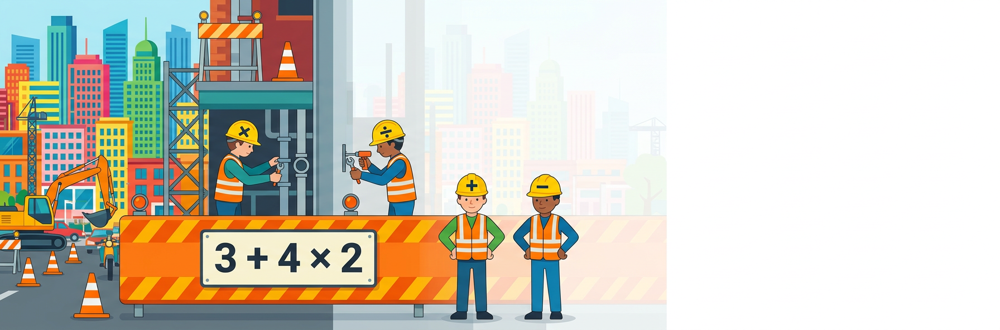
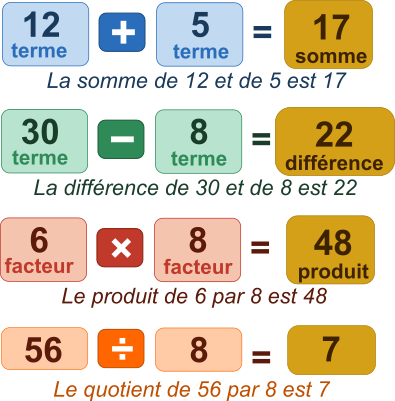
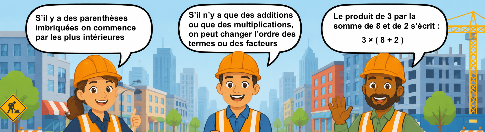

Une expression numérique est un enchainement d'opérations.
La nature d'une expression numérique correspond à la dernière opération effectuée.


1. 12 − 5 =
2. 6 × 9 =
✏️ Écris l'expression numérique :
3. La somme de 8 et de 7 =
E = 3 + 4 × (12 − 7)
E =
E =
E =
F = 20 − (3 + (8 − 5) × 2)
F =
F =
F =
F =